A arte é desenvolvida com quem vai carregar ela.
Projetos autorais, feitos do desenho à pele. Atendimento exclusivo com hora marcada.
5,0 em 222 avaliações no Google
O desenho existe antes da agulha.
Nada aqui sai de catálogo. O desenho é feito para a pessoa, aprovado antes da sessão, e é dele que sai a tatuagem. Esta é uma peça inteira, na ordem em que aconteceu.
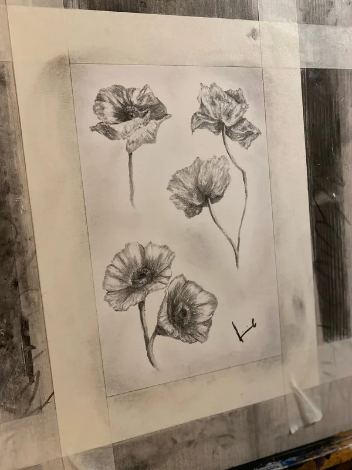
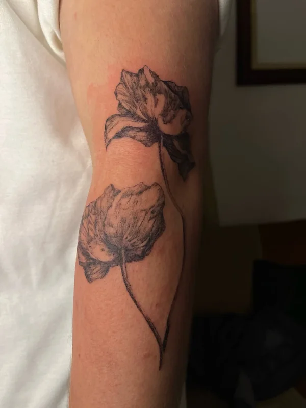
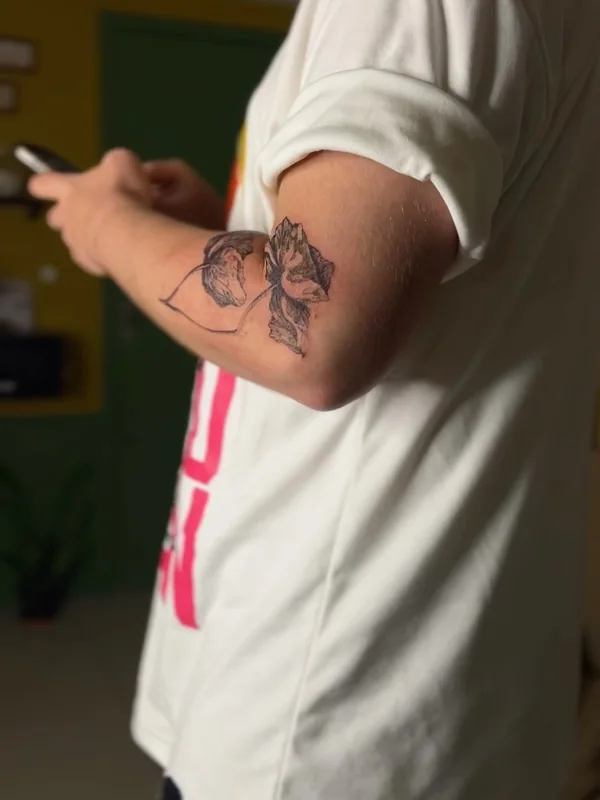
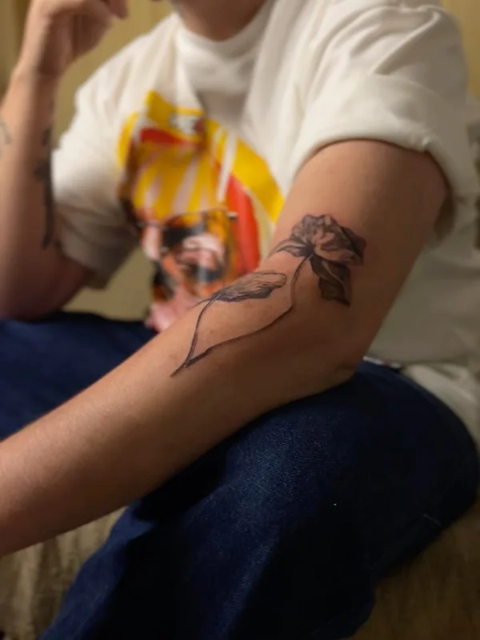
Seis tatuadores. Escolhe a mão antes do desenho.
Cada um tem estilo próprio. As peças abaixo são de cada um deles, e dá para chamar direto quem tu escolher.
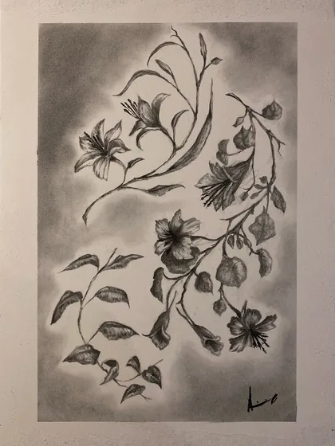
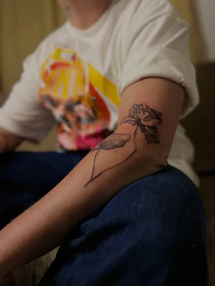
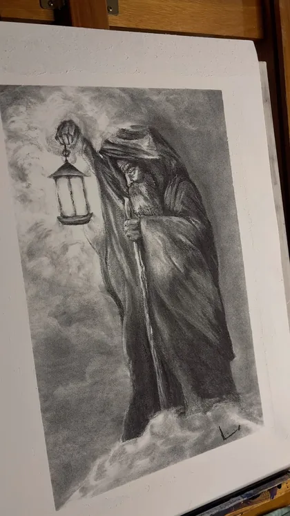
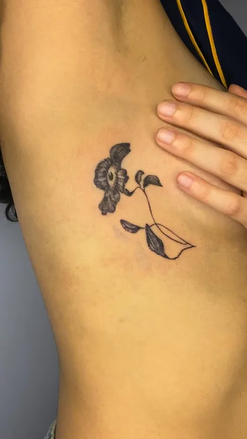
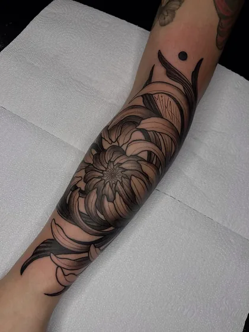
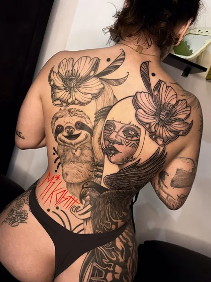
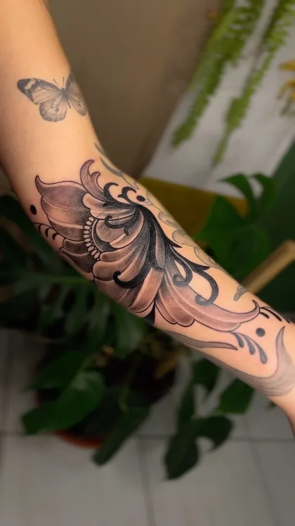
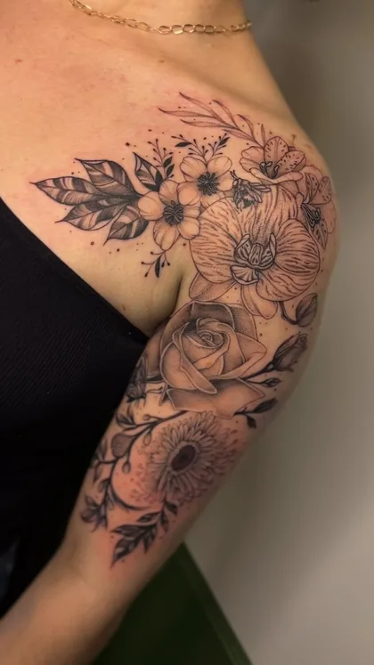
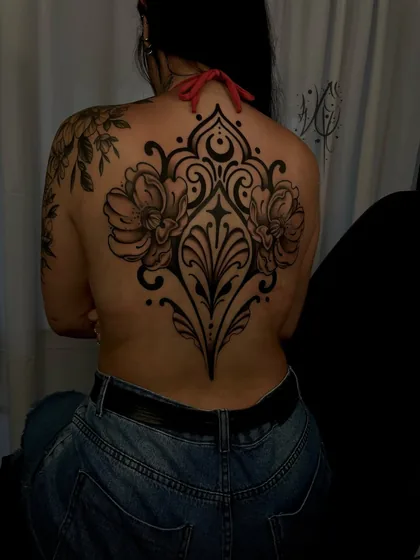
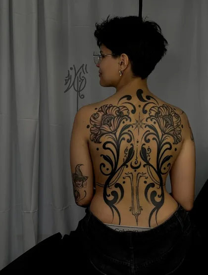
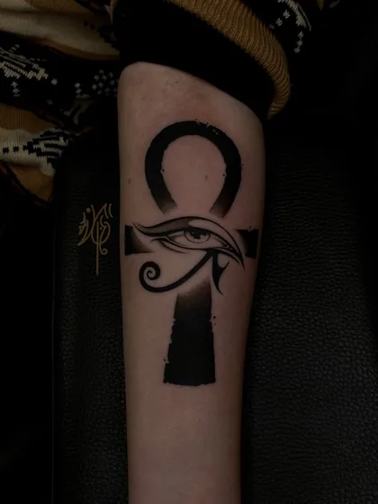
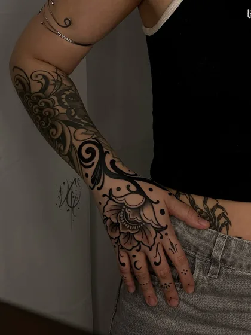
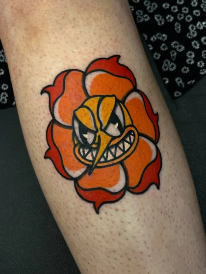
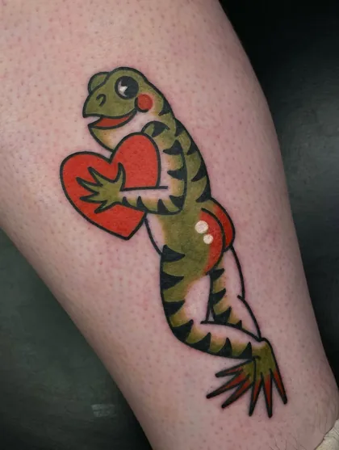
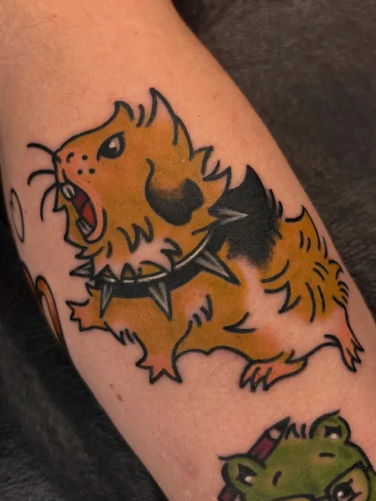
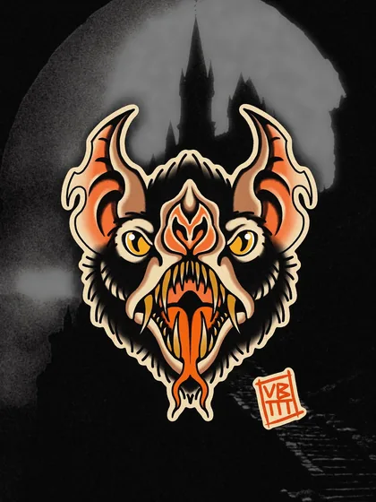
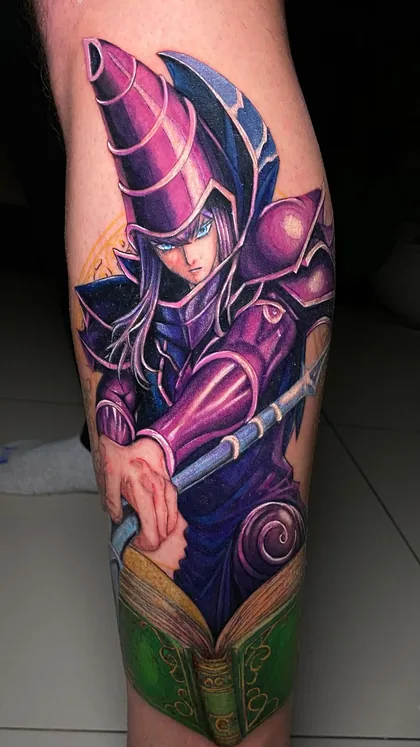
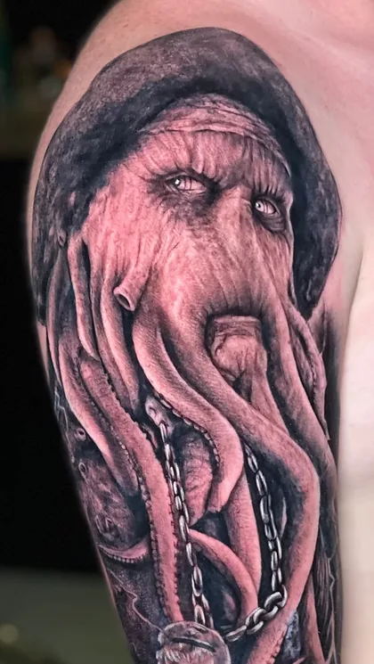
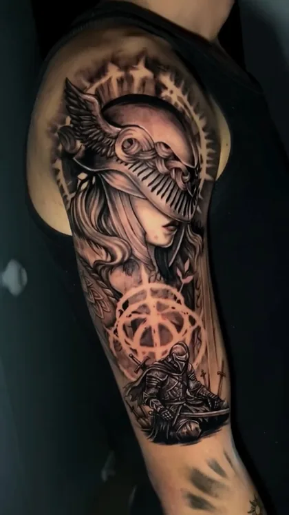
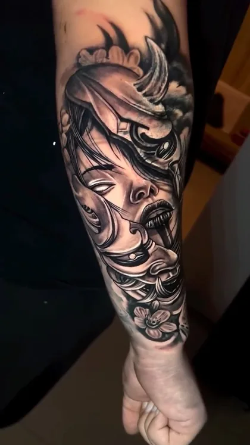
“Cada procedimento aqui é único.”
- 01Manda a ideia no WhatsApp.
Referência visual ajuda, mesmo que seja print. Se não tiver, descreve.
- 02Diz o tamanho e o lugar do corpo.
O orçamento leva em consideração a ideia, o tamanho, o local e a anatomia do corpo. É por isso que não existe tabela.
- 03O desenho vem antes da sessão.
Feito para você e aprovado por você. Depois disso marca a data.
- 04Atendimento com hora marcada.
Canoas e Porto Alegre. Sem fila, sem porta aberta.
Duas unidades.
-
Mandar a ideia
Orçamento sem compromisso: saber o preço não obriga a marcar.
- @estudio_fortuna
- Duas unidades
-
Canoas — R. Tiradentes, 130, sala 507
Porto Alegre — Av. Independência, 1211 - Atendimento
- Com hora marcada, nas duas unidades.
5,0 de média em 222 avaliações no Google. Nenhuma abaixo disso.